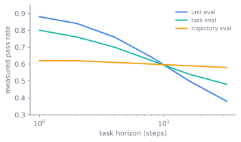

Evaluating Agents and Capabilities
The benchmarks of Chapter 36 score a single answer and the judges of Chapter 37 score a single response. An agent produces neither: it produces a trajectory of tool calls and environment changes, and the thing under test is not the model alone but the model wrapped in a harness. An agent score is a property of model-plus-harness; a multi-step trajectory has to be graded on its outcome rather than its path; and the verification layer that decides whether an agent succeeded should be built to disagree with the agent rather than to agree with it. One principle runs underneath all three: an independent, checkable signal beats a self-report. It governs how you grade the agent's work, and then, one level up, how you grade the verifier itself.

The refund that never happened
Picture the simplest possible failure. An agent is told to process a refund. Its transcript ends with the line "refund processed," confident and clean. The database has no such row. Nothing was refunded. An evaluation that reads the transcript marks this a success; an evaluation that reads the database marks it a failure. The gap between those two readings is the core evaluation problem.
A static benchmark never has this gap, because it gives the model an input and checks one output. An agent does work: it calls tools, edits files, queries a database, browses, and the unit that has to be judged is the whole sequence and the state it leaves behind (Anthropic 2026). Three things break the static recipe.
The first is that the subject is no longer the model. When you evaluate an agent, the runtime around the weights is under test alongside them: the orchestration loop, the tool dispatch, the context management, everything Chapter 31 owns. A capability number is a property of model-plus-harness, which is why a harness change can move it with the weights held fixed, and why a training-time agentic eval has to pin the harness version or it stops being comparable across checkpoints.
The second is that mistakes compound. In a single-shot benchmark an error is one wrong answer. In a trajectory an early wrong tool call changes the environment, and every later step reasons from the corrupted state, so failures propagate and a small slip becomes a wrecked run. Scoring only the final string misses where and why the run went wrong, and scoring each step in isolation misses that a capable agent recovers from its own mistakes.
The third is the refund itself: the agent can misreport what it did, not from malice but because the transcript is the model's account while the environment is the ground truth. The transcript may say "refund processed" while the database shows no such row. An eval that trusts the agent's narration measures storytelling, not work.
The agent benchmarks now in use all run into these three problems. GAIA targets general assistants (Mialon et al. 2023), WebArena (Zhou et al. 2023) and -bench (Yao et al. 2024) test tool-agent-user interaction, and OSWorld (Xie et al. 2024) and BrowseComp (Wei et al. 2025) test computer-use and browsing. The taxonomy of benchmark families belongs to Chapter 36, and what matters here is what these share: the answer key is a final environment state, not a string, so each one lives or dies on outcome verification rather than on string matching.
Grading the work: state, not story
The core move is to grade the outcome, not the path. Verify the actual final state of the environment, the row in the database, the file on disk, the URL the browser reached, and do not score the agent against a specific sequence of tool calls you expected it to make. Rigid path checking is brittle for a precise reason: a capable agent finds valid routes the eval author did not anticipate, and a frontier model that exploits a real policy loophole has found a better solution that a path-checking grader marks as a failure. Outcome grading is robust to creativity because it asks the only question that matters, whether the world is in the state the task required.
Verify the outcome, not the agent's claim about the outcome. The grader reads the environment, never the transcript's assertion that the work was done (Figure 38.2). Tool-call verification still has a place, but a narrow one: assert genuine preconditions, that verify_identity ran before process_refund, rather than scripting the whole route.
flowchart LR T["task: process the refund"] --> A["agent trajectory: tool calls, edits, browsing"] A --> X["transcript: 'refund processed'"] A --> S["environment state: DB row, file, URL"] A --> L["tool log: ordered calls"] X -. "untrusted narration" .-> G["grader"] S == "ground truth" ==> G L -- "preconditions only" --> G G --> O["pass / partial / fail"]
The grader differs by agent type. For coding agents it runs the test suite and inspects the final tree. For conversational agents it scores the dialogue against a rubric, checks the resulting state, and simulates users with personas under a turn cap (Yao et al. 2024). For research agents it checks groundedness, coverage, and source quality. For computer-use agents it reads backend, filesystem, and URL state rather than the confirmation screen the agent says it reached.
Because the unit is a trajectory, every trial needs an isolated, sandboxed environment that starts from a clean state. This is not hygiene for its own sake. Shared state both inflates scores, when a later trial benefits from an earlier one's leftover files, and produces correlated failures, when resource exhaustion or a prior trial's git history makes many trials fail together in a way that looks like agent behavior but is infrastructure flakiness. Two task-design rules keep the target sound. Multi-component tasks deserve partial credit, because an agent that identifies the problem and verifies the customer but fails the refund is better than one that fails immediately, and a binary grader hides that continuum. And the suite must be balanced, testing both where a behavior should fire and where it should not, because a search tool tested only on should-search cases optimizes toward over-triggering.
One measurement choice falls out of the trajectory being stochastic: a single run is not a score, a distribution is. Two summaries of that distribution tell opposite stories, and which one you report encodes the stake. pass@k, the chance of at least one success in attempts, rises with and is the right metric for a capability ceiling and for reinforcement-learning exploration in Chapter 20. pass^k, the chance that all trials succeed, falls with and is the right metric for a customer-facing agent that must be reliable every time. They are equal at and tell opposite stories by , so naming which one a score reports is not optional.
Set a per-trial success probability p and watch the two metrics start equal and diverge as k grows.
import numpy as np, matplotlib.pyplot as plt
p = 0.6 # per-trial success probability, try 0.3 or 0.9
k = np.arange(1, 11) # number of attempts
pass_at_k = 1 - (1 - p)**k # at least one success in k tries
pass_pow_k = p**k # all k tries succeed
plt.figure(figsize=(5, 3))
plt.plot(k, pass_at_k, "o-", label="pass@k (at least one)")
plt.plot(k, pass_pow_k, "s-", label="pass^k (all succeed)")
plt.xlabel("k attempts"); plt.ylabel("probability"); plt.ylim(0, 1)
plt.legend(); plt.tight_layout(); plt.show()
print(f"k=1: pass@k={pass_at_k[0]:.3f} pass^k={pass_pow_k[0]:.3f}")
print(f"k=10: pass@k={pass_at_k[-1]:.3f} pass^k={pass_pow_k[-1]:.3f}")
All of this raises a sharper question. If the grader for an open-ended agent task is itself a model, who verifies the verifier? This is where the design of agent evaluation meets the design of agent systems, because the answer is the same bet in both places: an independent, checkable signal beats a self-graded one. That bet has a name and a body of theory.
Who verifies the verifier?
The first instinct for making a stochastic agent reliable was to run several and aggregate. Vote across samples, ensemble across model families, add a judge, and treat agreement as evidence of correctness. The intuition came from places where it held: statistical estimation, classical fault-tolerant computing, machine-learning ensembles trained on independently sampled data. None of those assumptions hold for agents driven by the same base model. Their failures are correlated. They co-hallucinate, share blind spots, and lean toward the same fluent-but-wrong answers on the same inputs, so a third copy does not buy the fault diversity that Byzantine fault tolerance promises. Berdoz et al. measured this directly: valid scalar consensus among language-model agents drops from 46.6% at to 33.3% at with no adversary present (Berdoz et al. 2026). Adding agents made it worse. The Free-MAD work adds a second failure: in consensus-driven debate, agents that start with correct answers can be pulled toward incorrect ones, and majority voting can degrade reasoning (Cui et al. 2025). And self-evaluation is biased at the root, because a model-as-judge favors its own generations (Panickssery et al. 2024) and pairwise judges carry position bias (Shi et al. 2025), so a panel of judges from one family inherits one family's blind spots.
What distributed systems leaves behind
The forty-year-old distributed-systems literature still contributes two things that survive the move to stochastic agents. One is the separation of liveness from safety: a system can fail by producing a wrong answer or by producing none, and the empirical result above is that agent-consensus failures are mostly liveness failures (Berdoz et al. 2026). The agents do not converge on a wrong answer, they fail to converge at all. That distinction is load-bearing for design, because a liveness failure is recoverable by escalation to a human while a safety failure ships silently. The other is that correlated failure is exactly how a fault bound becomes false in practice, and the fix is not more replicas but breaking the correlation with heterogeneous models, prompts, and tooling.
Disagreement as signal
The deeper move is to stop treating disagreement as noise. In an idealized debate a single competent honest critic is enough to expose a flaw no matter how many other critics are lazy or wrong. This is the intuition behind Irving, Christiano, and Amodei (Irving et al. 2018), formalized by Brown-Cohen, Irving, and Piliouras, who show soundness under a large compute asymmetry: the honest strategy uses polynomial simulation while the dishonest one may use exponentially more, and a judge that inspects only the single disputed leaf can adjudicate claims it could never have produced unaided (Brown-Cohen et al. 2023). Verification of an agent's work is therefore closer to proof checking, property testing, and red-team review than to ensemble prediction. The verifier does not reproduce the artifact. It forces a disputed claim down to a small witness, a failing test, a vulnerable input, a violated invariant, a missing citation, that a cheaper judge can inspect. This is the same shape as grading an agent's outcome rather than its path: in both cases an independent checkable signal replaces a self-report.
Where the choices bite
The choices in agent evaluation diverge as the trajectory gets longer.
- Outcome versus path. Outcome grading verifies the final state and is robust to a capable agent's creativity, but it is blind to a lucky-but-fragile success that reached the right state for the wrong reason. Path grading catches how an agent failed but penalizes valid routes and scripts the eval author's assumptions into the grader. Default to outcome, add narrow path checks only for true preconditions.
- pass@k versus pass^k. Because trials vary, report a distributional metric, and the choice of which one encodes the stake. pass@k rises with and measures a capability ceiling and reinforcement-learning exploration; pass^k falls with and measures customer-facing reliability. They are equal at and tell opposite stories by , so naming which one a score reports is not optional.
- Aggregation versus adversarial verification. Aggregating agents is cheap and simple, but under correlated failure it buys little and can suppress the one signal worth keeping. Adversarial verification needs heterogeneous critics and a protocol, which costs integration complexity and a coordination tax, but it is the only thing that restores useful fault diversity when the agents share a base model. The multi-agent systems of Chapter 32 inherit this choice directly.
- Liveness escalation versus safety blocking. A system that distinguishes "the agents could not converge" from "the agents converged on a wrong answer" can route the first to a human and refuse to ship the second. A system that conflates them does the wrong thing on both.
Whether reliability for stochastic agents comes from aggregation or from adversarial verification is unsettled. The aggregation position, vote across samples and ensemble across families, is still the dominant pattern and is defended on simplicity and on the cases where inputs are unambiguous enough that any decoder agrees. The adversarial position holds that agreement among similar models is weak evidence of correctness, sometimes evidence of nothing more than an easy input, and that the diagnostically useful signal is the surviving objection of a competent critic, not the size of the agreeing majority. The open questions are concrete and unresolved: the right number of critics per attack surface, where the diminishing-returns curve sits across model families, how to stop an adversarial protocol from drifting off the original claim, and how to evaluate adversarial verification itself against aggregation on a careful benchmark.
The verification layer's architecture is dictated one layer down, by where the agents come from. Two agents drawn from the same base model, the same training distribution, and often the same prompt template do not have independent failure modes, so the fault-diversity assumption that aggregation relies on is already false before the first vote is counted. That lower-layer fact, shared weights imply correlated failure, is what forces the upper layer to be adversarial and heterogeneous rather than aggregational: a verifier that is a cheaper echo of the layer it verifies cannot tell you anything the layer did not already believe. The choice between voting and cross-examination is not a matter of taste at the evaluation layer. It is set by the provenance of the models being evaluated.
agon: adversarial review, shipped
The adversarial design has a shipped instance in agon, a tool that runs post-hoc adversarial review on a coding session by forking it into independent critics. The protocol inverts the aggregation default. Instead of running agents and taking the majority, it runs a proposer, forks independent critics with no shared context, has each critic pick a distinct attack topic, runs cross-examination until the proposer concedes or the critic gives up, and surfaces only the unresolved disputes scored by how long they survived attack. Five properties carry the design:
- Forked review, never in the root session. Each critic runs in its own branched fork via
--fork-session, and the tool writes results to disk as a separate process, so the user's primary transcript is byte-identical after a run. - Verbatim channel. The critic's output reaches the proposer clone as a plain user turn, not wrapped in a template that would distort the proposer's normal defense behavior.
- Self-declared topics. Each critic picks its own attack topic and later critics are told which topics are taken, so coverage spreads. The debate property that one competent honest critic suffices means a lazy critic on one topic does not break the others.
- Persisted ledger. Every attack carries a stable id and every transition is appended to a log. The headline is chosen by a pure contention score, not by a model: . The judging layer is statistical, not neural, which is the doubly-efficient-debate intuition made concrete: the judge is cheaper and dumber than the proposer (Brown-Cohen et al. 2023).
- Critic isolation. The critic sees the artifact and task only, enforced by system prompt and a read-only sandbox.
The asymmetry between the two designs (Figure 38.3) is the whole argument. Aggregation places every voter inside one shared blind spot, so a flaw in that region survives no matter how many voters you add. Adversarial verification spreads critics across distinct axes, so a flaw on any covered axis is caught by the one critic who sees it.
A small formal contrast explains why this dominates aggregation when failures correlate. Let be the probability that critic catches a flaw on the axis it evaluates. With independent critics on distinct axes, where one caught flaw suffices, the probability a flaw survives the panel factors over critics:
The formula reads as a sequence of missed catches: critic misses with probability , and independent misses multiply. Any residual positive correlation between verdicts only raises survival above this product, so the product is the best case the panel buys, and it collapses to zero the moment one competent critic on the relevant axis has . Aggregation tells the opposite story. With voters under majority vote and pairwise verdict correlation , as the chance a flaw survives the ensemble approaches the chance that the single shared failure mode misses it, and adding voters does nothing:
Here the limit is the design intuition: as verdicts become perfectly correlated, the panel stops behaving like checks and starts behaving like one shared check repeated times. The product only pays if the cover different ways the artifact can be wrong, which is why forcing topic diversity, rather than piling critics on one surface, is how the protocol spends its budget.
Capability versus safety
This is the same bet Chapter 37 makes about judges and the same one Chapter 20 makes about rewards: a signal you can check independently beats one the system grades on itself. It is also where capability evaluation and safety evaluation part ways. Capability asks "can it," and a capability eval should start at a low pass rate or there is nothing to learn from it. Safety asks "will it refuse, will it harm," needs adversarial and red-team coverage rather than held-out accuracy, and gates release on its own axis, because a capability gain can be a safety regression and the two pull against a shared budget. Adversarial verification is the technical form of the same stance: the artifact that ships to the human is the short list of disputes that competent independent critics could not get the agent to either fix or convincingly defend, and that is the set of decisions that actually need human judgment.
Further reading
- Anthropic, “Demystifying Evals for AI Agents,” 2026. anthropic.com
- Mialon et al., “GAIA: a benchmark for General AI Assistants,” 2023. arXiv:2311.12983
- Yao et al., “τ-bench: A Benchmark for Tool-Agent-User Interaction in Real-World Domains,” 2024. arXiv:2406.12045
- Zhou et al., “WebArena: A Realistic Web Environment for Building Autonomous Agents,” 2023. arXiv:2307.13854
- Xie et al., “OSWorld: Benchmarking Multimodal Agents for Open-Ended Tasks in Real Computer Environments,” 2024. arXiv:2404.07972
- Wei et al., “BrowseComp: A Simple Yet Challenging Benchmark for Browsing Agents,” 2025. arXiv:2504.12516
- Berdoz et al., “Can AI Agents Agree?,” 2026. arXiv:2603.01213
- Cui et al., “Free-MAD: Consensus-Free Multi-Agent Debate,” 2025. arXiv:2509.11035
- Panickssery et al., “LLM Evaluators Recognize and Favor Their Own Generations,” 2024. arXiv:2404.13076
- Shi et al., “Judging the Judges: A Systematic Study of Position Bias in LLM-as-a-Judge,” 2025. aclanthology.org
- Irving et al., “AI safety via debate,” 2018. arXiv:1805.00899
- Brown-Cohen et al., “Scalable AI Safety via Doubly-Efficient Debate,” 2023. arXiv:2311.14125